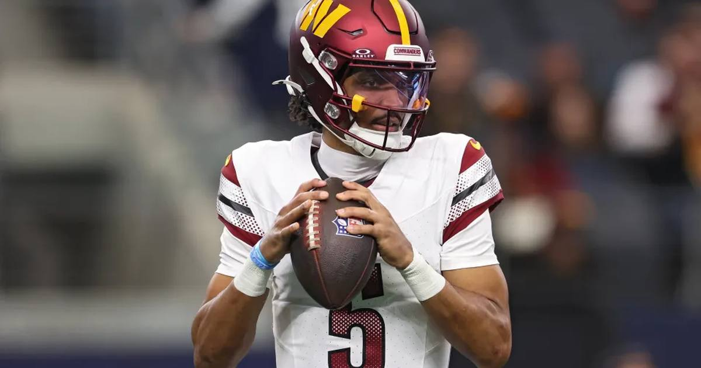

Sunday Night's Basement Bowl: Eagles Visit Commanders With the NFC East's Pride on the Line
The 2-5 Eagles visit the 1-4-1 Commanders on Sunday Night Football at 8:20 PM ET on NBC, with Washington a 6.5-point favorite despite its own record.

Sunday Night Football is not supposed to look like this, and that is exactly why it might be fun. The Philadelphia Eagles (2-5) visit the Washington Commanders (1-4-1) at Northwest Stadium on Sunday at 8:20 PM ET on NBC — a matchup of the two bottom teams in the NFC East, with a combined 3-9-1 record, and Washington still a 6.5-point favorite, total 40.5, moneyline Commanders -278 / Eagles +225, via the ESPN scoreboard's DraftKings odds.
Read that line again: the 1-4-1 team is giving nearly a touchdown. That is not a typo. That is the market telling you how banged up Philadelphia is, and how much it still believes in Jayden Daniels at home.
The matchup
Philadelphia's season has been a slow-motion pileup. The Eagles lost 38-21 to Dallas on Monday night, and now they travel without their starting quarterback — Jalen Hurts is out, which means Tanner McKee starts under the Sunday night lights. McKee's prop lines tell you what the market thinks of the spot: 197.5 passing yards at FanDuel, and the Eagles' implied team total sits around 17 points.
Washington's situation is not much prettier, just less catastrophic. The Commanders are 1-4-1, they lost their best receiver for the season weeks ago, and they are giving their own backup plan a primetime stage. Daniels, though, is the reason Washington is favored: the market-implied score sits around Commanders 23, Eagles 17, and Daniels' dual-threat game is the one thing in this matchup that still scares a defense.
Injury report
Philadelphia: Quarterback Jalen Hurts is out, and Tanner McKee starts. Wide receiver DeVonta Smith is out. Running back Saquon Barkley is battling a hamstring injury that limited him to seven carries on Monday night — but he sat out Wednesday and Thursday practice, was limited Friday, said he's good to go, and carries no injury designation for Sunday. He is, officially, a go. Whether he is a full workload is a different question, and it is the biggest one in this game.
Washington: Wide receiver Terry McLaurin is out for the season with a torn patellar tendon, confirmed weeks ago. Daniels starts, and the Commanders' offense runs through him and the run game now — there is no McLaurin safety net anymore.
Storylines to watch
1. McKee's night. A backup quarterback on Sunday Night Football, in a division game, with his top receiver out and his star running back at less than full strength. If McKee is steady, Philadelphia has a chance. If he is not, this gets out of hand early.
2. Barkley's hamstring. On Monday night, Barkley turned seven carries into 62 yards and a touchdown — 8.9 yards a carry, somehow, on a bad hamstring. When he has played a full game, he has topped 60 yards, averaging 82.5 in the two games where he cleared 10 carries. The question is not talent. It is whether his body lets him carry the ball 16 times, and the honest answer from people who watched practice this week is that nobody is sure.
3. The spread that moved. Washington opened around -4 and is now -6.5. That is the market moving toward the home team in a game between two losing teams, which tells you everything about how the week of practice went for both sides.
No bet pick in this preview — the picks live in their own posts. This one is about primetime pride: two teams at the bottom of the NFC East, one backup quarterback, one bad hamstring, and a Sunday night stage that will make somebody feel a lot better by midnight.
Sources: ESPN NFL scoreboard, Week 8 (DraftKings odds), Covers — Eagles vs. Commanders prop picks, NBC Sports Philadelphia — Eagles vs. Commanders betting guide, FanDuel Research — Saquon Barkley and Eagles face Commanders, The Sport Stack — Eagles vs. Commanders prediction
Gear up: Fanatics